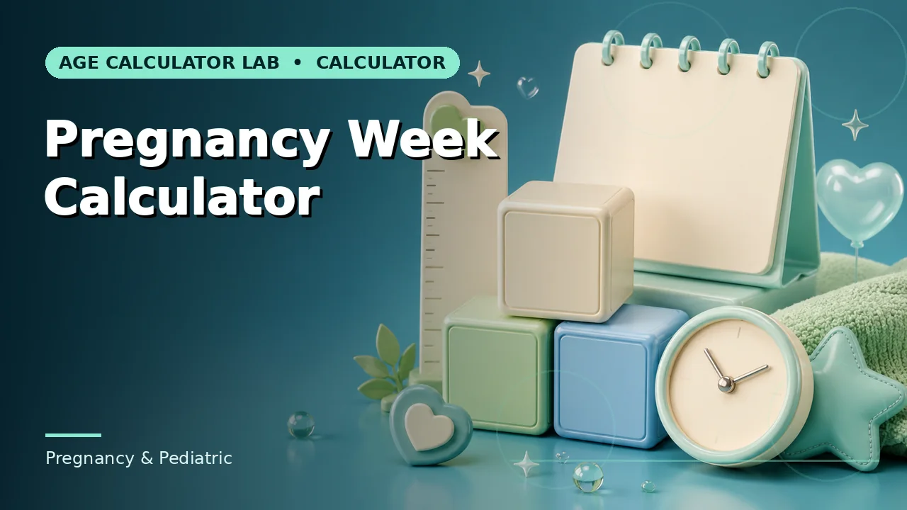

Pregnancy & Pediatric
Gestational age, due dates, corrected age for prematurity and infant age tracking.

Gestational Age Calculator
Gestational age from the first day of the last menstrual period.

Pregnancy Due Date Calculator
An estimated due date from the last menstrual period and cycle length.

Conception Date Calculator
An estimated conception window from LMP or due date.

Pregnancy Week Calculator
Pregnancy week and day on a selected date.
Trimester Calculator
The estimated pregnancy trimester and gestational week.

Fetal Age Calculator
An approximate fetal age derived from gestational age.

Adjusted Age Calculator
Corrected age for a child born before 40 weeks gestation.

Corrected Age Calculator
Chronological age adjusted for weeks of prematurity.

Baby Age in Weeks Calculator
A baby’s chronological age in completed weeks and days.

Baby Age in Months Calculator
A baby’s chronological age in calendar months and days.

Premature Baby Age Calculator
Chronological and corrected age for prematurity-related planning.

Reverse Due Date Calculator
The estimated due date and LMP implied by a current gestational week and day.

IVF Due Date Calculator
An estimated due date calculated from an embryo transfer date and embryo day.
Pregnancy Countdown Calculator
Days remaining until an estimated due date, with trimester context.
Guides for this category
Understand the conventions before the number goes into a record or a decision.
Browse the rest of the 161 calculators
Ten more groups covering assessments, pregnancy, work, dates and cultural references.